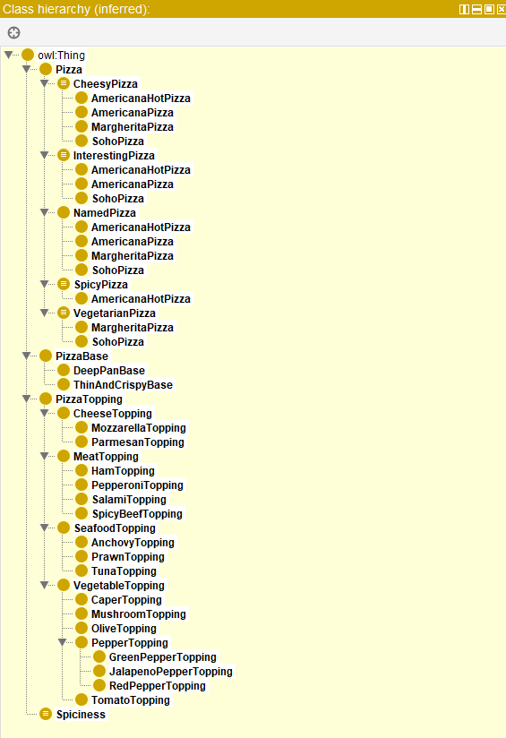

My Reflection
Overall Reflection
This unit was mainly about getting hands-on experience with Protégé, which is an open-source ontology editor and knowledge management system developed by Stanford University.
The unit included a seminar, in which the tutor discussed ideas around ontology modelling, in addition to a set of readings and a formative activity to follow the infamous
pizza ontology tutorial.
Readings Reflection
The reading that I found most interesting is an article titled What is a Knowledge Representation? by Davis, Shrobe and Szolovits (1993), which discussed
knowledge representation through detailing its five main roles, and connected it to a wider background of difference in its logical view and psychological view, also arguing
that representation and reasoning are intertwined and inseparable. This made me think and relate knowledge representation to a wider context, even if unrelated to computer science
directly. For example, I started thinking about ideologies and belief systems as forms of knowledge representation that shape how individuals and societies reason about the world and make decisions.
I also thought about how then time and its material conditions shape evolving frames of knowledge, and therefore frames of knowledge can each be though of as a domain of possible ontologies.
These would then be the possible lenses through which societies and individuals interpret and reason about their realities in a given era, with its own conditions, constraints and possibilities.
I wondered then if there can be a superior meta domain (like the owl:Thing class in OWL) that encapsulates all possible frames of knowledge and ontologies across time and contexts.
Below are some quotes that I especially like from the reading:
-
"If, as we have argued, all representations are imperfect approximations to reality, each approximation attending to some
things and ignoring others, then in selecting any representation we are in the very same act unavoidably making a set of
decisions about how and what to see in the world. That is, selecting a representation means making a set of ontological commitments."
-
"Note that at each layer, even the first (e.g., selecting rules or frames), the choices being made are about representation,
not data structures. Part of what makes a language representational is that it carries meaning,
i.e., there is a correspondence between its constructs and things in the external world. That correspondence in turn carries with it
constraint."
-
"From a purely mechanistic view, reasoning in machines (and somewhat more debatably, in people) is a computational process.
Simply put, to use a representation we must compute with it. As a result, questions about computational efficiency are inevitably
central to the notion of representation."
-
"Representation and reasoning are inextricably intertwined: we cannot talk about one without also, unavoidably, discussing the other.
We argue as well that the attempt to deal with representation as knowledge content alone leads to an incomplete conception of the task
of building an intelligent reasoner."
Reference
Davis, R., Shrobe, H. and Szolovits, P. (1993) ‘What is a Knowledge Representation?’, AI Magazine, pp. 17–33. Available at: https://groups.csail.mit.edu/medg/ftp/psz/k-rep.html (Accessed: 14 December 2025).
Artefacts
Formative Activity
Following Pizza Tutorial on Protégé
I followed Chapter 4 of the practical guide
to building OWL ontology on pizza defining classes, subclasses, properties and restrictions. Here's a screenshot of the class hierarchy I created:
